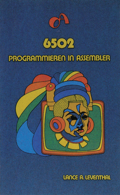
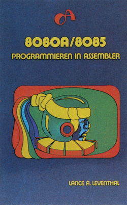

Literatur für Einsteiger
6502 — Programmieren in Assembler

Nur wenigen Büchern auf dem Gebiet der Computertechnik ist es vorbehalten, auch noch Jahre nach deren Veröffentlichung in gleicher Form gültig und aktuell zu sein. »6502 — Programmieren in Assembler« von Lance A. Leventhal ist eines davon.
Schon in der Einführung bemerkt man, daß in diesem Buch viel Wert auf Übersichtlichkeit, optische Hervorhebung der zentralen Stellen und das Wiederauffinden derselben gelegt wurde. In Kästchen an den Rand des Textes gestellte Schlagworte gewährleisten auch beim Überfliegen eines Kapitels schnellen Zugriff auf die gewünschte Information. Interessant ist, daß der Autor die Materie der Programmierung in Maschinensprache (wie man Assembler gelegentlich auch bezeichnet) aus verschiedenen Perspektiven betrachtet, beispielsweise im Hinblick auf die Verwendung von Hochsprachen wie Pascal und Fortran. Die sorgfältige Darstellung der jeweiligen Vor- und Nachteile, sowie Literaturverweise am Ende jedes Kapitels (leider nur englischsprachige Bücher als Relikt der Übersetzung) ziehen sich ebenfalls wie ein roter Faden durch dieses Buch. Dem Umgang mit Assemblern, also den Programmen, die das Programmieren in Assemblersprache anstatt Binärzahlen überhaupt erst ermöglichen, ist ein eigenes Kapitel gewidmet. Die Darstellung des Befehlssatzes des Mikroprozessors 6502 (von der Programmierung identisch mit dem 6510 des C 64) nimmt eine zentrale Stellung im Buch ein und wird sicher sehr häufig zu Nachschlagezwecken verwendet. Hier wird auf die verschiedenen Register, das Status-Flag, die Adressierungsarten und -möglichkeiten, sowie auf den Befehlssatz des Prozessors ausführlich eingegangen. Übersichten, die die Auswirkungen im Speicher, auf die Register und das Status-Flag aufzeigen, erhöhen die Verständlichkeit des komplexen Stoffes. Die verbleibenden ¾ des Buches stehen im Zeichen von Anwendungen, die zum einen grundlegende Prinzipien und Programmiermethoden beleuchten, die Anwendung von Befehlen erklären, als auch Aufgaben hierzu stellen. Wird beispielsweise die 8-Bit-Addition anhand eines kleinen Programmes erklärt, findet man bei den Aufgaben zum jeweiligen Stoff eine 8-Bit-Subtraktion, wobei Aufgabenstellung sowie Inhalt der Speicherzellen vor und nach der Programmausführung genau festgelegt sind. Die Lösung und Überprüfung der Problemstellungen setzt voraus, daß der Leser ein Assembler-Programm schreibt, dies in den Computer eingibt und das Ergebnis mit den Vorgaben überprüft. Eine explizite Aufgabenlösung ist nicht vorhanden; an seine Stelle tritt das Prüfen des vom Programm berechneten Ergebnisses. Die Motivation und der Lerneffekt dieser Vorgehensweise ist nicht zu unterschätzen, es wird dadurch jedoch auch vorausgesetzt, daß der Anwender für seinen Computer einen Assembler und ein Monitorprogramm (wie man Programme zur Darstellung und Veränderung von Speicherzellen bezeichnet) besitzt und er damit umgehen kann. Da dieses Rüstzeug jedoch ohnehin für diese Materie unbedingt erforderlich ist, kann man nicht von einem Nachteil bei der Konzeption sprechen. Nach Durcharbeiten des Buches kennt man die Prozessorbefehle, Programmschleifen und Verzweigemöglichkeiten, den Umgang mit zeichencodierten Daten, weiß mit Code-Umwandlung und arithmetischen Problemen auf binärer Ebene umzugehen, schreibt man Unterprogramme, kennt die Vorteile von Interrupts (Unterbrechungen im Programmablauf) und zieht regen Nutzen aus dem Gebrauch von Tabellen und Listen bei der Programmierung. Teile der Kapitel Ein/Ausgabe und Unterbrechungen sind für den Anfänger nicht gerade einfach zu lesen und gehen auch auf weitere Bausteine (zum Beispiel den VIA-Zeitgeber) moderner Mikrocomputer ein. Die letzten vier Kapitel widmen sich der Programmentwicklung, der Formulierung eines Problems in der Prozessorsprache eines Computers sowie der Fehlersuche, dem Testen, der Dokumentation und Neuentwicklung von Programmen und geben dem Einsteiger eine Fülle an Tips und Hilfestellungen auf seinem Weg zur Programmerstellung. Auf einen kleinen Schönheitsfehler sei jedoch noch hingewiesen: es wurde kein Stichwortverzeichnis in dieses Buch mit aufgenommen, ein Umstand, der bei etwa 670 Seiten und der Fülle an Informationen schmerzlich vermißt wird.
Fazit: Wenn Sie beabsichtigen, mit dem Befehlssatz des 6502/6510 programmieren zu lernen oder Vorkenntnisse auf diesem Gebiet zu vertiefen, sind Sie mit »6502 — Programmieren in Assembler« bestens beraten. Lediglich zu beachten ist dabei, daß Programme zur Arbeit in Maschinensprache (Assembler und Monitor) vorausgesetzt werden, sowie keine spezifischen Systemadressen eines bestimmten Computers beschrieben werden, wodurch dieses Buch universell verwendbar bleibt. Entsprechende Informationen können jedoch dem Handbuch des Copmuters und weiterführender Literatur (ROM-Listings, Systemhandbücher etc. entnommen werden.
(O. Trottno/bj)6502 — Programmieren in Assembler, 2. Auflage, Lance A. Leventhal, te-wi Verlag, zirka 670 Seiten, ISBN: 3-921803-10-1, Preis: 59 Mark
8080A/8085 — Programmieren in Assembler

Vom gleichen Autor, gleichen Verlag und in gleicher Gründlichkeit widmet sich dieses Buch der Vermittlung von Assembler-Programmierungskenntnissen, hier für die Prozessortypen 8080A und 8085. Auf 8080-Maschinenspracheebene stößt man beispielsweise bei der Arbeit mit CP/M 3.0 des C 128. Zwar ist es für den Anwender nicht unbedingt erforderlich, unter dem Betriebssystem CP/M in Assembler zu programmieren, da ausreichend Hochsprachen zur Verfügung stehen (zum Beispiel Turbo-Pascal, C oder Fortran), doch sprechen einige Punkte für den Einstieg in diese Materie:
— Es existiert ein sehr großes Software-Angebot für diesen Prozessortyp,
— es lassen sich Schnittstellen zu und zwischen professionellen Programmen (etwa Multiplan) selbst herstellen,
— es bestehen interessante Interrupt-Möglichkeiten.
8080A/8085 — Programmieren in Assembler ist nun das Äquivalent zum zuvor beschriebenen Buch für diesen Prozessor, alles Gesagte gilt unumschränkt auch für dieses Werk. Interessant sind die Vergleichsmöglichkeiten für Besitzer beider Bücher, die in der entsprechenden neuen Materie Fuß fassen wollen und schon über Kenntnisse der Programmierung des anderen Prozessortypes verfügen.
Gleiche Aufgabenstellungen (vom 8-Bit-Datentransfer und der 8-Bit-Addition bis hin zu den beiden Großprojekten »Digitale Stoppuhr« und »Digital-Thermometer«) ermöglichen bereits Verstandenes auf das neue Gebiet zu übertragen und noch schneller Erfolge zu verzeichnen. Darüber hinaus lassen sich sehr gut Parallelen und Abweichungen, Vor- und Nachteile der beiden Prozessortypen 6502 und 8080 erkennen, dies jedoch unter der Voraussetzung, daß der Anwender schon mit dem jeweils »anderen« Prozessor gearbeitet hat.
Allen völligen Neulingen wird der Weg wie schon beim zuvor besprochenen Werk durch optisch, inhaltlich und didaktisch sehr gut aufbereiteten Stoff geebnet. Erwähnenswert ist bei diesem Buch auch das Vorhandensein eines Stichwortverzeichnisses, was die Suche nach einer bestimmten Information sehr erleichtert.
(O. Trottno/bj)8080A/8085 — Programmieren in Assembler, 2. Auflage, Lance A. Leventhal, te-wi Verlag, zirka 500 Seiten, ISBN: 3-921803-09-8, Preis: 49 Mark